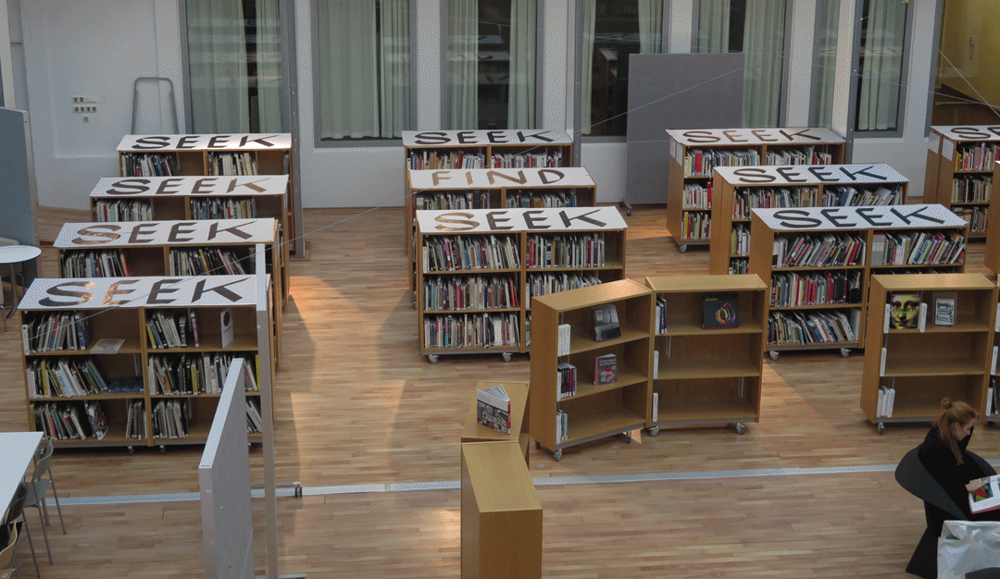

SEEK&FIND
Space elavated by type at the art library in Gothenburg. Using the library as a common source of knowledge, the typographic word play can only be "solved" from above. Part of a one week workshop about super graphics.
